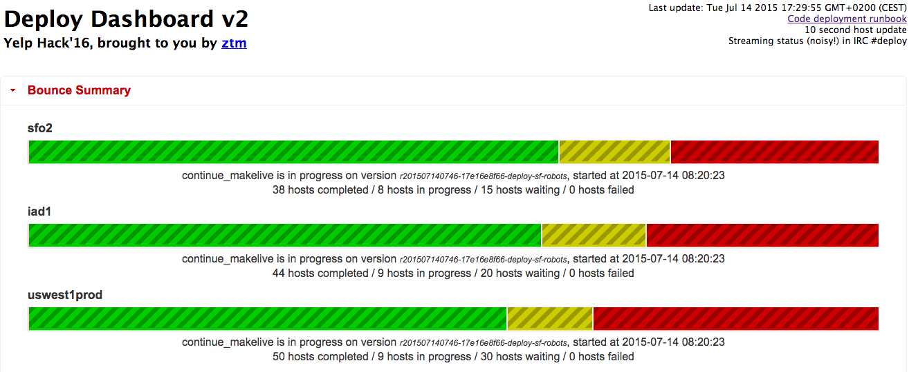
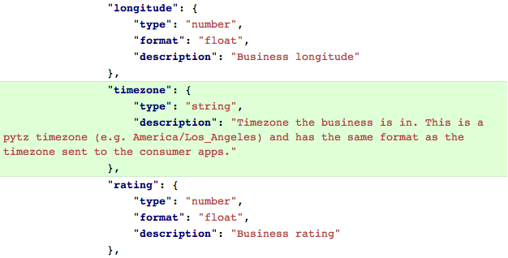

by Stephan Jaensch - sjaensch@yelp.com
backend developer for the Biz Owner App
worked on the main Yelp app backend before that
Python user since 2008
did a lot of Django work in the past
Code deployments (“pushes”) are done several times a day
Run by a pushmaster, an engineer with production system access
People join a push (“pickme”)
Automatic checks make sure there are no merge conflicts
deployment branch is deployed to a stage system
after verification, it’s sent to production
~2 hour process, with no upper bound
you can run only so many pushes a day
so let’s build services!
each service is developed and deployed independently
services are usually small, covering only one aspect or set of features
easy to parallelize thanks to async HTTP requests, so it might even speed your code up
http://bit.do/fowler-serviceconsistency is really hard
no clear dependency / usage graph
need to maintain interfaces “forever”
testing one huge, mostly self-contained codebase is easy; how do you test services?
unittests
...are great, but not enough
a lot of breakage if interfaces change
our solution: acceptance tests
as close to production as possible without using dedicated stage environments
spin up all components you need, using production code
done with docker-compose
heavyweight: take time to run, setup grows with the number of services you call
configs:
build: acceptance/configs/
volumes:
- "./logs:/tmp/logs"
bizapp:
build: .
links:
- bizfeed
- businessmedia
- internalapi
- sessionsservice
- ruleserv
volumes_from:
- configs
ports:
- 13849
internalapi:
image: docker-dev/internalapi-testing
links:
- gearman
- memcache
- databaseprimary
- databaseaux
- databasebatch
- geocoderservice
environment:
YELP_USE_GEARMAND: True
originally we used tornado; didn’t work well
now: Pyramid, uWSGI, SQLAlchemy
HTTP and JSON for communication
Swagger to specify the API and do the inter-service calls
does request and response validation
data structure and basic type checking of the individual fields
works dynamically by reading a service’s spec, no need to generate and update client libraries
a special snowflake since it’s one of the very few services reachable from the outside
not constrained to one area (like business media)
no local datastore
oftentimes just a proxy, calling yelp-main and other services
RESTy model
one resource per endpoint
do multiple calls (to different endpoints) to fetch related resources
get concurrency for free (if using async calls)
some say a lot of simple calls are easier to scale than fewer complicated ones
one endpoint per client (app) page
for write (POST) endpoints, also send the client the data it needs to display the follow-up page
aggregate and enrich data we retrieve from yelp-main and other services
a high-level interface that translates to our low-level service APIs
mobile apps have releases
in our case, they’re synchronized, both in time and in features
iOS apps need to be reviewed; might take 10+ days
you probably also want to test before releasing
meaning: API needs to be done sooner than client implementation
way sooner than release date
you can’t upgrade apps whenever you upgrade the server
actually, some users never upgrade
so your APIs need to be backwards compatible - forever
maintaining multiple versions can become costly
adding fields is backwards compatible
number of requests, server errors, task queues, sent push notifications…
ElastAlert: it's open source!
app crashes: Crashlytics
you need an on-call rotation: we use PagerDuty
Scott Triglia: Arrested Development - surviving the awkward adolescence of a microservices-based application
Friday, 11am, Python Anywhere room
We’re hiring! Check out yelp.com/careers
Interested? Contact me even if you don’t find an open job position that fits you, we’re always looking for talented people!
yelp.com/engineering aggregates the blog posts, open source projects and more
follow us on Twitter: @Yelp, @YelpEngineering
The Yelp Dataset Challenge: yelp.com/dataset_challenge
Want to work with data, but have no data lying around?
questions?